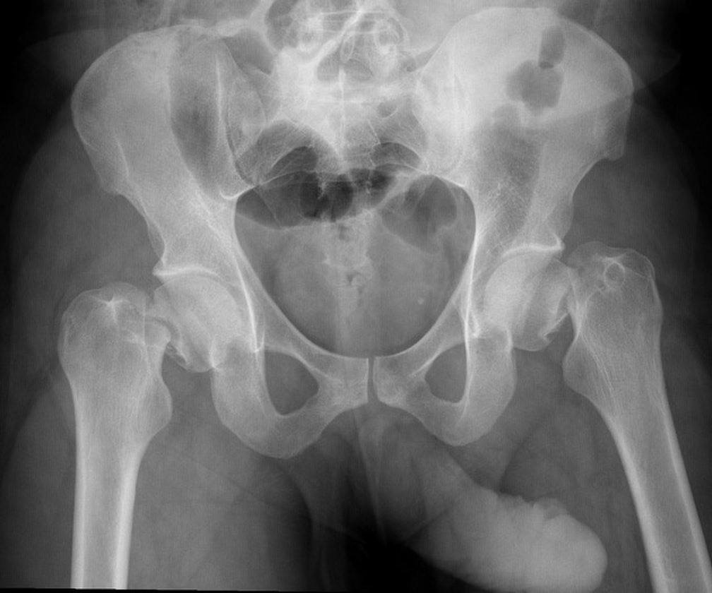

Início › Fratura de quadril no idoso
Urgência e traumaFratura de quadril no idoso
Se você chegou até aqui, é bem provável que seu pai, sua mãe ou alguém que você ama esteja neste momento em um leito de hospital, depois de uma queda que parecia boba. Esta página foi escrita para você. Ela explica, sem enfeite e sem alarme, o que costuma acontecer daqui para frente: por que quase sempre se opera, em quanto tempo, quais são as cirurgias possíveis, como é a recuperação, quais são os riscos reais e o que depende de vocês.
Revisado em 16 de agosto de 2026
O que é uma fratura de quadril
Em uma frase
Fratura de quadril é a quebra da parte de cima do fêmur, o osso da coxa, logo abaixo da articulação. No idoso ela quase sempre acontece por uma queda simples sobre um osso enfraquecido, e o tratamento padrão é a cirurgia precoce, feita não só para consertar o osso, mas principalmente para tirar a pessoa da cama o mais rápido possível.
A palavra "quadril" confunde muita gente. O quadril é a articulação em que a cabeça do fêmur, uma esfera, se encaixa no acetábulo, uma cavidade da bacia. Quando se fala em fratura de quadril no idoso, quase nunca se está falando da bacia: fala-se da extremidade superior do fêmur, a região que liga a esfera ao resto do osso da coxa. Por isso os médicos usam também os termos fratura do fêmur proximal, fratura do colo do fêmur e fratura transtrocantérica.
É uma das lesões mais frequentes e mais estudadas da ortopedia geriátrica. Projeções internacionais estimam que o número de fraturas de quadril no mundo chegue a milhões de casos por ano à medida que a população envelhece, e é justamente por ser tão comum que existe hoje um caminho de tratamento bem definido, com etapas previsíveis. Saber quais são essas etapas ajuda a atravessar os próximos dias com menos angústia e a fazer as perguntas certas à equipe.

Por que acontece: a queda é o gatilho, não a causa
A frase que mais se ouve nos corredores é: "mas ela só escorregou no tapete". E é verdade. Na quase totalidade dos casos, o mecanismo é uma queda da própria altura, dentro de casa, sem violência nenhuma. Em um estudo chinês com 2.115 idosos operados, mais de 96% das fraturas vieram de uma queda simples, não de acidente de trânsito ou trauma grave.
Um osso jovem e saudável não quebra com isso. O que permite que uma queda banal quebre o fêmur é a osteoporose: a perda progressiva de massa e de qualidade óssea que acompanha o envelhecimento, mais intensa nas mulheres após a menopausa. Não é coincidência que, no mesmo estudo, cerca de 68% dos pacientes fossem mulheres, com idade média em torno de 79 anos.
Isso tem uma consequência prática importante e frequentemente esquecida: a fratura é o sintoma, a osteoporose é a doença. Tratar apenas o osso quebrado e mandar a pessoa para casa é resolver metade do problema. Voltaremos a isso na seção sobre a segunda fratura, que é a parte deste texto que mais muda o futuro.
Ao lado da osteoporose, existe um segundo conjunto de causas: aquilo que fez a pessoa cair. Tontura, pressão que cai ao levantar, remédios para dormir, calmantes, visão ruim, fraqueza muscular, tapetes soltos, banheiro sem apoio, iluminação fraca à noite. Cada um desses é modificável, e nenhum será modificado se ninguém perguntar por que ela caiu.
Colo do fêmur ou transtrocantérica: por que o tipo muda tudo
Assim que a radiografia sai, a primeira coisa que o ortopedista determina é onde o osso quebrou. Poucos centímetros de diferença mudam completamente a cirurgia, e entender isso ajuda a acompanhar a conversa com a equipe.
- Fratura do colo do fêmur (intracapsular). Fica dentro da cápsula da articulação, na "haste" curta que liga a cabeça ao restante do osso. O problema aqui não é só o osso: os vasos que nutrem a cabeça do fêmur sobem justamente por essa região. Quando a fratura desvia, a circulação pode ser interrompida e a cabeça do fêmur corre risco de não cicatrizar ou de morrer com o tempo, o que se chama necrose. Por isso, no idoso com fratura desviada do colo, a solução mais previsível costuma ser trocar a cabeça por uma prótese, e não tentar fixá-la.
- Fratura transtrocantérica (extracapsular). Fica logo abaixo, na região dos trocânteres, aquelas saliências ósseas onde os músculos do quadril se prendem. É osso esponjoso, largo, com circulação abundante. Consolida bem. O tratamento padrão é fixar, quase sempre com uma haste metálica introduzida dentro do canal do fêmur, ligada a um parafuso que atravessa o colo até a cabeça.
- Fratura subtrocantérica. Um pouco mais abaixo ainda, na transição para a diáfise do fêmur. É a menos comum das três, costuma exigir uma haste mais longa e tende a consolidar mais devagar.
Nas casuísticas hospitalares, as transtrocantéricas costumam ser as mais frequentes: no estudo chinês citado acima, foram 1.529 transtrocantéricas contra 586 do colo do fêmur. Isso explica por que muita família chega esperando ouvir "vai colocar prótese" e ouve "vai colocar uma haste": não é uma cirurgia inferior, é a cirurgia certa para aquele tipo de fratura.
Sinais de que houve uma fratura
O quadro clássico é bastante característico. Depois da queda, a pessoa:
- sente dor forte na virilha ou na lateral do quadril, que piora a qualquer tentativa de mover a perna;
- não consegue apoiar o peso nem ficar em pé;
- fica com a perna visivelmente mais curta e rodada para fora, com o pé "caído" para o lado;
- sente dor irradiada para a coxa ou para o joelho, o que às vezes desvia a atenção do lugar certo.
Existe, porém, uma armadilha que vale conhecer. Algumas fraturas, especialmente as do colo do fêmur sem desvio e as fraturas por insuficiência, são pouco espetaculares: a pessoa até consegue andar mancando, apoiando pouco, e a radiografia inicial pode parecer normal. Quando a dor na virilha persiste depois de uma queda e não há explicação, a investigação precisa continuar, geralmente com tomografia ou ressonância. Uma fratura oculta que continua sendo pisada pode desviar e transformar um tratamento simples em um complexo.
Quando procurar o pronto-socorro imediatamente
- queda em pessoa idosa seguida de dor no quadril ou na virilha com incapacidade de ficar em pé ou de dar passos;
- perna visivelmente encurtada e girada para fora após a queda;
- dor no quadril que persiste por dias depois de uma queda, mesmo que a radiografia do primeiro atendimento tenha sido descrita como normal;
- qualquer queda com batida na cabeça, perda de consciência, uso de anticoagulante ou confusão nova.
Fratura de quadril no idoso é urgência hospitalar. Não é caso de esperar para ver se melhora, de compressa ou de consulta marcada para a semana seguinte.
Idoso com fratura de quadril precisa operar?
Na esmagadora maioria dos casos, sim. E a razão principal costuma surpreender as famílias: a cirurgia não é feita só para consertar o osso, é feita para tirar a pessoa da cama.
Um idoso mantido deitado por semanas para que a fratura consolide sozinha enfrenta uma cascata previsível: pneumonia por não conseguir respirar fundo e mobilizar secreção, trombose nas pernas, feridas de pressão no sacro e nos calcanhares, infecção urinária, constipação, confusão mental, perda acelerada de massa muscular e, ao fim, perda definitiva da capacidade de andar. Some-se a isso a dor: uma fratura instável dói a cada troca de fralda e a cada mudança de posição. A cirurgia estabiliza o osso e permite sentar, levantar e caminhar em poucos dias. Ela é, antes de tudo, uma medida de alívio da dor e de sobrevivência funcional.
O tratamento sem cirurgia existe, mas ficou reservado para situações bem definidas: pessoas que já não caminhavam antes da queda e que sentem pouca dor, fraturas realmente estáveis e encaixadas em pacientes selecionados, e situações em que o risco anestésico é considerado proibitivo ou em que o objetivo do cuidado passou a ser exclusivamente o conforto. Nesses casos, não operar é uma decisão legítima e cuidadosa, tomada em conjunto com a família, e não um abandono.
Sobre a idade, vale ser direto: não existe um número que sirva de corte. Nonagenários e centenários são operados rotineiramente. O que decide não é a data de nascimento, é o conjunto de condições clínicas e o grau de fragilidade, e há evidência sólida de que a fragilidade prevê o desfecho muito melhor do que a idade isolada, como veremos adiante.
Em quanto tempo deve ser operado
O padrão internacional é operar o mais cedo possível, idealmente dentro das primeiras 24 a 48 horas após a chegada ao hospital, desde que o paciente esteja clinicamente apto. Diretrizes de referência recomendam a cirurgia no mesmo dia da admissão ou no dia seguinte.
Os dados sustentam essa orientação. Em uma coorte de 2.333 pacientes operados em Taiwan, o intervalo de 48 horas ou mais entre a lesão e a cirurgia foi mais frequente entre os pacientes que morreram no primeiro ano. Em outra coorte, com 2.115 idosos chineses, tanto o tempo até a admissão quanto o tempo até a operação apareceram associados à mortalidade na análise inicial. E em um estudo coreano com 481 pacientes, a mediana de espera pela cirurgia foi de cerca de 98 horas, ou seja, aproximadamente quatro dias, um retrato honesto de como a realidade costuma ser mais lenta do que a recomendação.
Aqui entra uma distinção que vale muito para quem está aguardando no corredor. Um ensaio clínico internacional que comparou cirurgia acelerada, feita em poucas horas, com o cuidado padrão de cerca de um dia não encontrou redução significativa de mortalidade com a pressa extrema, mas encontrou menos delirium, menos dor e mobilização mais rápida. Ou seja: correr das 24 horas para as 6 horas traz ganhos de conforto; deixar passar quatro dias por falta de vaga, de sala ou de material é outra conversa, e essa sim tem custo.
Atraso justificado não é atraso ruim
Adiar a cirurgia por algumas horas para transfundir uma anemia grave, compensar uma insuficiência cardíaca, corrigir um distúrbio de sódio, controlar uma infecção ativa ou esperar o efeito de um anticoagulante passar é medicina correta, e não descaso. O que a evidência condena é o atraso administrativo, não o atraso clínico. Se a cirurgia for adiada, é justo perguntar à equipe: "o que exatamente estamos aguardando e qual é a previsão?".
Quais são as cirurgias possíveis
A escolha depende do tipo de fratura, do grau de desvio, da qualidade do osso e, principalmente, de como a pessoa vivia antes da queda. As opções principais são três.
Fixação com parafusos ou placa
Usada sobretudo em fraturas do colo do fêmur sem desvio ou minimamente desviadas. Consiste em atravessar o traço de fratura com parafusos ou com um parafuso deslizante acoplado a uma placa, mantendo o osso original da pessoa. É uma cirurgia menor, com menos sangramento, mas depende de o osso consolidar e carrega o risco de a fratura desviar depois ou de a cabeça do fêmur sofrer necrose, o que pode exigir uma segunda cirurgia.
Haste intramedular (fraturas transtrocantéricas)
É o tratamento habitual das fraturas transtrocantéricas e subtrocantéricas. Uma haste metálica é introduzida por dentro do canal do fêmur, a partir de uma incisão pequena na lateral do quadril, e um parafuso robusto atravessa o colo até a cabeça femoral, sustentando o conjunto. Em geral a redução é obtida em uma mesa de tração, sem abrir o foco da fratura. É uma cirurgia rápida, estável o suficiente para permitir apoio precoce, e nela o quadril da pessoa é preservado inteiro: não se coloca prótese.
Prótese parcial ou prótese total
Nas fraturas do colo do fêmur com desvio em idosos, a substituição costuma ser preferida à tentativa de fixação, porque evita o risco de a cabeça femoral não cicatrizar. Há duas versões:
- Prótese parcial (hemiartroplastia): troca-se apenas a cabeça do fêmur, mantendo o acetábulo original. É mais rápida, sangra menos e tem menor risco de luxação. Costuma ser a escolha para pacientes mais frágeis, com menor demanda funcional ou com comprometimento cognitivo.
- Prótese total: trocam-se os dois lados da articulação. Um grande ensaio clínico internacional comparou as duas em pacientes com fratura do colo e encontrou vantagem funcional modesta a favor da prótese total, sem diferença significativa na necessidade de nova cirurgia em dois anos. Por isso ela tende a ser indicada a idosos mais ativos, independentes, com boa cognição e, muitas vezes, com artrose já instalada naquele quadril.
Se o caminho escolhido for a prótese, vale ler também a página sobre a recuperação depois da prótese de quadril, que detalha a linha do tempo do pós-operatório.
Como é a internação e o pós-operatório imediato
O roteiro habitual, quando tudo corre bem, é mais ou menos este:
- Chegada e avaliação. Radiografia, exames de sangue, avaliação clínica e, cada vez mais, avaliação conjunta com clínico ou geriatra. Analgesia desde o primeiro momento, muitas vezes com bloqueio de nervo, que reduz a necessidade de opioides e de seus efeitos colaterais em idosos.
- Preparo para a cirurgia. Jejum, avaliação anestésica e, quando necessário, transfusão ou compensação clínica. A anestesia pode ser raquidiana ou geral; ambas são consideradas seguras e a escolha é individual.
- Cirurgia. Costuma durar entre uma e duas horas.
- Primeiro dia após a cirurgia. Este é o dia mais importante. O objetivo, na maioria dos casos, é sentar na beira do leito e ficar em pé com andador ainda nas primeiras 24 a 48 horas. Levantar cedo é o principal remédio contra pneumonia, trombose e delirium.
- Prevenção de trombose. Medicação anticoagulante em dose profilática, meias ou compressão, e movimentação dos pés e tornozelos.
- Retomada da alimentação e do ritmo. Comer bem, hidratar, retirar sonda vesical assim que possível, abrir a janela de dia, apagar a luz de noite, colocar óculos e aparelho auditivo. Parece detalhe, e não é: é prevenção ativa de confusão mental.
- Alta. Frequentemente entre o terceiro e o sétimo dia quando não há intercorrências, mas o tempo varia muito entre serviços. A alta depende de dor controlada, ferida em ordem, condição clínica estável e um plano viável em casa.
Um dado que costuma tranquilizar: na maioria das fixações e das próteses feitas para fratura, o apoio do peso é liberado logo, conforme a tolerância. Ficar sem pisar por semanas é exceção, não regra, e quando for o caso a equipe dirá explicitamente.

A recuperação: quando volta a andar
Uma linha do tempo aproximada, lembrando que cada pessoa segue o próprio ritmo:
- Dias 1 a 3: sentar, ficar em pé, primeiros passos com andador ao lado do fisioterapeuta.
- Primeiras semanas: caminhar dentro de casa com andador, subir e descer alguns degraus com apoio, retirada dos pontos por volta de duas semanas.
- 1 a 3 meses: é a janela em que mais se ganha. Transição gradual do andador para a bengala em muitos pacientes, retomada das atividades básicas do dia a dia, fisioterapia regular.
- 3 a 12 meses: a melhora continua, mais lentamente. Força e equilíbrio seguem evoluindo com treino. É também o período em que se avalia se será preciso manter algum apoio para caminhar de forma definitiva.
Sobre o resultado final, é preciso honestidade: uma parte importante dos pacientes volta ao nível de caminhada que tinha antes da fratura, mas nem todos. O melhor preditor do que vem depois é o que existia antes. Quem caminhava sozinho na rua tem chance real de voltar a caminhar sozinho na rua; quem já dependia de andador em casa dificilmente ficará melhor do que estava. É por isso que a pergunta que a equipe faz logo na entrada, "como ela andava antes da queda?", não é burocracia: é o dado que mais informa o prognóstico funcional.
Um recado para a família: reabilitação não é o que acontece nas três sessões semanais de fisioterapia, é o que acontece nas outras 165 horas da semana. Caminhar pelo corredor de casa várias vezes ao dia, sentar e levantar da cadeira, comer proteína suficiente e não passar o dia inteiro na poltrona valem mais do que qualquer aparelho.
Riscos e complicações
Toda cirurgia tem riscos, e neste cenário eles são reais. Falar deles não é assustar: é permitir que sejam reconhecidos cedo, que é exatamente o que muda o desfecho. Em um estudo coreano com 481 idosos operados, 38% tiveram pelo menos uma complicação. A distribuição foi esta:
- Delirium (confusão mental aguda): de longe a mais comum, presente em cerca de um terço dos pacientes. Aparece como desorientação, agitação, fala desconexa, sonolência ou inversão do dia com a noite, geralmente nos primeiros dias. Na imensa maioria das vezes é reversível. Reduz-se com controle da dor, hidratação, sono organizado, retirada precoce de sondas, óculos e aparelho auditivo à mão, e presença de rostos familiares.
- Pneumonia e infecção urinária: as infecções mais frequentes, ambas fortemente ligadas ao tempo na cama e ao uso prolongado de sonda.
- Trombose venosa profunda e embolia pulmonar: menos frequentes que as infecções, mas potencialmente graves; é por isso que existe a profilaxia anticoagulante.
- Anemia e necessidade de transfusão: comuns. Vale notar que, na coorte de Taiwan, hemoglobina abaixo de 10 na admissão e a necessidade de mais de duas unidades de sangue apareceram associadas a maior mortalidade em um ano.
- Complicações do implante: luxação da prótese, soltura ou migração do material, fratura ao redor do implante, necessidade de nova cirurgia.
- Infecção da ferida operatória: menos comum, mas é a complicação cirúrgica mais temida, porque pode exigir novas operações.
Sinais de alerta no pós-operatório
- febre, calafrios, vermelhidão crescente ou saída de secreção pela ferida;
- dor súbita e intensa no quadril operado, encurtamento novo da perna ou incapacidade repentina de apoiar (pode indicar luxação da prótese ou falha do implante);
- falta de ar súbita, dor no peito ou queda de saturação;
- inchaço, dor ou vermelhidão em uma panturrilha;
- confusão mental nova ou sonolência excessiva, especialmente já em casa;
- parada de urinar, vômitos persistentes ou recusa alimentar prolongada.
Qualquer um desses itens justifica contato imediato com a equipe ou retorno ao pronto-socorro.
A conversa difícil sobre prognóstico
Esta é a pergunta que quase toda família faz em voz baixa, e que quase nenhum site responde. Vamos responder, com o cuidado que ela merece.
Fratura de quadril no idoso é um evento sério, e não adianta suavizar. Estudos internacionais descrevem mortalidade em um ano variando de aproximadamente 12% a 36%, conforme a população estudada, o sistema de saúde e a idade dos pacientes. No estudo coreano com 481 idosos operados, os números foram: 1,2% no primeiro mês, 7,3% em seis meses e 13,9% em um ano. Em uma coorte de Taiwan com 2.333 pacientes acima de 50 anos, a mortalidade em um ano foi de 11,7%.
Agora a parte que quase nunca é dita, e que muda a leitura desses números. Eles são a média de populações inteiras, e não uma previsão sobre uma pessoa. O que mais determina o desfecho não é a fratura: é o estado de saúde que existia antes da queda. No estudo coreano, um escore de fragilidade construído a partir de albumina, circunferência do braço, comorbidades, capacidade de caminhar, cognição, risco de queda, estado nutricional e sexo previu a mortalidade em seis meses com desempenho de 0,78, enquanto a idade sozinha ficou em 0,58 e a classificação de risco anestésico em 0,66. Entre os pacientes classificados como frágeis, a mortalidade em seis meses foi de 18,8%; entre os não frágeis, 3,6%. É a mesma fratura, na mesma idade, com histórias completamente diferentes.
Outros fatores que apareceram consistentemente associados a pior evolução nesses estudos foram idade avançada, sexo masculino, demência prévia, doença renal com filtração reduzida, anemia, plaquetas baixas, internação prolongada e desnutrição. E aqui está a boa notícia escondida: vários deles são tratáveis.
O melhor exemplo é a nutrição. Um estudo com 2.115 idosos avaliou um índice simples calculado a partir da albumina e da contagem de linfócitos do sangue e encontrou uma relação clara com a sobrevida: abaixo de um determinado ponto, cada unidade a mais nesse índice correspondia a cerca de 6% menos mortalidade, e o efeito se estabilizava acima desse limiar. Traduzindo do estatístico para o humano: o estado nutricional antes e depois da cirurgia é um dos fatores modificáveis que mais pesam, e revisões mostram que suplementação nutricional oral reduz complicações e encurta a internação. Comer bem, com proteína suficiente, não é conselho de vovó: é intervenção com evidência.
Assim, a resposta honesta à pergunta "ele vai ficar bem?" é: ninguém pode prometer. Mas as coisas que aumentam a chance de ficar bem são conhecidas e estão, em boa parte, ao alcance de vocês: cirurgia sem atraso desnecessário, sair da cama no primeiro dia, controlar a dor, comer direito, prevenir e reconhecer o delirium, fazer reabilitação de verdade e tratar a osteoporose. Nenhum médico sério dará um prognóstico individual em números, e você deve desconfiar de quem der.
Como evitar a segunda fratura
Esta é a seção que mais muda o futuro e a que mais é esquecida na alta hospitalar. Quem fraturou o quadril passa a integrar o grupo de maior risco de fraturar de novo, seja no outro quadril, na coluna ou no punho. E, paradoxalmente, é o grupo que menos recebe tratamento para osteoporose: a minoria dos pacientes sai do hospital com esse plano definido. Corrigir isso é a intervenção de maior retorno depois da própria cirurgia.
- Tratamento medicamentoso da osteoporose. Um ensaio clínico marcante mostrou que iniciar tratamento com ácido zoledrônico logo após a cirurgia de fratura de quadril reduziu em cerca de um terço as novas fraturas clínicas e, de forma inesperada, também reduziu a mortalidade. A escolha do medicamento e do momento é do médico, mas a pergunta cabe à família: "quem vai cuidar da osteoporose dele depois da alta?".
- Vitamina D e cálcio. Correção da deficiência, que é altíssima nessa faixa etária, e ingestão adequada de cálcio preferencialmente pela alimentação.
- Revisão dos medicamentos. Calmantes, indutores do sono, alguns antidepressivos, anti-hipertensivos que derrubam a pressão ao levantar e medicações para diabetes que causam hipoglicemia aumentam o risco de queda. Uma revisão criteriosa da lista de remédios é uma das medidas mais eficientes que existem.
- Ajuste da casa. Retirar tapetes soltos e fios no chão, instalar barras de apoio no banheiro e ao lado do vaso, tapete antiderrapante no box, luz de presença no caminho do quarto ao banheiro, cadeira no banho, calçado fechado com sola aderente dentro de casa.
- Força e equilíbrio. Treino progressivo de força de pernas e de equilíbrio é a intervenção com melhor evidência para prevenir novas quedas, e deve continuar depois que a fisioterapia formal terminar.
- Visão, audição e pés. Consulta oftalmológica, avaliação de catarata, aparelho auditivo funcionando e cuidado com os pés e com as unhas.
O que a família pode fazer
Uma lista prática, para os próximos dias.
No hospital
- Leve óculos, aparelho auditivo, dentadura e a lista completa de medicamentos de uso contínuo. Esses quatro itens reduzem confusão, melhoram alimentação e evitam erros.
- Pergunte à equipe: qual é o tipo da fratura, qual é a cirurgia planejada, qual a previsão da cirurgia e o que está sendo aguardado se houver atraso.
- Insista, com delicadeza, na saída da cama. Se no dia seguinte à cirurgia ninguém tiver sentado o paciente, pergunte por quê.
- Ajude nas refeições e observe o quanto realmente foi comido. Perda de apetite prolongada precisa ser dita à equipe.
- Mantenha o ritmo do dia: cortina aberta pela manhã, conversa, calendário e relógio visíveis, luz baixa e silêncio à noite. É a melhor prevenção de delirium que existe.
- Se surgir confusão nova, avise a equipe e não trate como "coisa da idade". Delirium tem causa e tem tratamento.
Antes da alta
- Prepare a casa enquanto ele ainda está internado: cama acessível, caminho livre até o banheiro, barras de apoio, banquinho no chuveiro, tapetes fora.
- Confirme o plano de fisioterapia, quando começa e onde será.
- Confirme como fica a prevenção de trombose em casa: qual medicação, por quanto tempo.
- Saia com três coisas por escrito: o retorno com o cirurgião, o plano para a osteoporose e a lista atualizada de medicamentos.
- Organize o revezamento entre os familiares. As primeiras semanas exigem presença, e cuidador exausto adoece.
Uma nota sobre os números desta página
Os dados citados vêm de estudos publicados em revistas científicas com coortes grandes, principalmente da Ásia, somando mais de 4.900 pacientes, além de diretrizes e ensaios clínicos internacionais. Populações diferentes, sistemas de saúde diferentes e épocas diferentes produzem números diferentes, e não existe hoje uma base brasileira equivalente amplamente publicada. Use estes valores como ordem de grandeza para entender o que está em jogo, nunca como previsão sobre uma pessoa específica. Quem conhece o caso é a equipe que está cuidando dele.
Perguntas frequentes
Dúvidas sobre fratura de quadril no idoso
Idoso com fratura de quadril precisa operar?
Na grande maioria dos casos, sim. A cirurgia não é feita apenas para consertar o osso: é feita para tirar a pessoa da cama. Um idoso deitado por semanas tem risco alto de pneumonia, trombose, feridas de pressão, infecção urinária, confusão mental e perda irreversível de massa muscular. O tratamento sem cirurgia fica reservado para situações específicas, como quem já não caminhava antes da queda e sente pouca dor, ou quem tem risco proibitivo de anestesia. É uma decisão que se toma em conjunto com a equipe, o paciente e a família.
Existe idade limite para operar uma fratura de quadril?
Não existe um número que sirva de corte. Pessoas com mais de 90 e até mais de 100 anos são operadas rotineiramente. O que pesa na decisão não é a idade no documento, e sim as condições clínicas, o grau de fragilidade e como a pessoa vivia antes da queda. Estudos mostram que escores de fragilidade preveem o desfecho muito melhor do que a idade isolada.
Em quanto tempo a fratura de quadril precisa ser operada?
O padrão internacional é operar o mais cedo possível, idealmente dentro de 24 a 48 horas da chegada ao hospital, desde que o paciente esteja em condições clínicas para isso. Atrasos por falta de vaga, de sala ou de material estão associados a mais complicações. Já um adiamento de algumas horas para corrigir uma anemia grave, compensar o coração ou aguardar o efeito de um anticoagulante passar é medicina correta, não negligência.
Quanto tempo o idoso demora para voltar a andar depois da fratura de quadril?
O objetivo é colocar a pessoa em pé com andador já no primeiro ou segundo dia após a cirurgia. Caminhar dentro de casa com apoio costuma acontecer nas primeiras semanas, e o maior ganho de função ocorre nos três primeiros meses, com melhora que segue até cerca de um ano. Uma parte importante dos pacientes volta ao nível de caminhada que tinha antes, mas nem todos: quanto melhor era a marcha antes da queda, maior a chance de recuperá-la.
Fratura de quadril em idoso é grave?
Sim, é um evento sério, e não adianta suavizar isso. Estudos internacionais descrevem mortalidade em um ano variando de cerca de 12% a 36% conforme a população estudada. Em uma coorte de 481 idosos operados, aproximadamente 86 de cada 100 estavam vivos um ano depois. O risco depende muito mais do estado de saúde anterior à queda do que da fratura em si, e vários fatores que pesam podem ser trabalhados: cirurgia precoce, nutrição, saída rápida da cama, reabilitação e tratamento da osteoporose.
Qual a diferença entre fratura do colo do fêmur e transtrocantérica?
São regiões vizinhas com comportamentos diferentes. A fratura do colo do fêmur fica dentro da articulação e pode interromper a circulação da cabeça do fêmur, por isso, quando há desvio no idoso, o tratamento costuma ser a substituição por prótese. A fratura transtrocantérica fica logo abaixo, fora da articulação, em osso com boa circulação, e quase sempre é tratada com fixação, geralmente uma haste metálica dentro do fêmur.
Quanto tempo o idoso fica internado depois da cirurgia de fratura de quadril?
A internação varia bastante entre serviços e países. É comum ficar entre três e sete dias quando não há complicações, mas o tempo se estende quando surgem intercorrências clínicas ou quando é preciso organizar a continuidade dos cuidados em casa. Internação prolongada é, em si, um marcador de pior evolução nos estudos, o que reforça a importância de mobilizar cedo e tratar as complicações rápido.
Como evitar uma segunda fratura depois da fratura de quadril?
Quem fraturou o quadril tem risco elevado de fraturar de novo, e é justamente esse o grupo que menos recebe tratamento. As medidas com melhor evidência são o tratamento medicamentoso da osteoporose iniciado ainda no período próximo à fratura, a correção da vitamina D e do cálcio, a revisão dos medicamentos que aumentam o risco de queda, o ajuste da casa e o treino de força e equilíbrio.
Em resumo
- No idoso, a fratura de quadril quase sempre vem de uma queda simples sobre osso enfraquecido pela osteoporose: a queda é o gatilho, a osteoporose é a doença.
- Opera-se quase sempre, e o motivo principal é tirar a pessoa da cama, evitando pneumonia, trombose, feridas de pressão e perda definitiva da marcha.
- A cirurgia depende do tipo: fixação com haste nas transtrocantéricas, prótese parcial ou total nas fraturas do colo com desvio, parafusos nas sem desvio.
- O padrão é operar em 24 a 48 horas; atraso administrativo custa caro, atraso para compensar o paciente é correto.
- Os números de mortalidade são sérios, mas descrevem populações, não pessoas: a fragilidade prévia prevê o desfecho muito melhor do que a idade.
- O que está ao alcance da família tem peso real: mobilização precoce, alimentação, prevenção de delirium, reabilitação constante e, sobretudo, tratar a osteoporose para evitar a segunda fratura.
Referências
- Choi JY, Cho KJ, Kim SW, Yoon SJ, Kang MG, Kim KI, Lee YK, Koo KH, Kim CH. Prediction of mortality and postoperative complications using the Hip-Multidimensional Frailty Score in elderly patients with hip fracture. Scientific Reports. 2017;7:42966.
- Wu CY, Tsai CF, Yang HY. Utilizing a nomogram to predict the one-year postoperative mortality risk for geriatric patients with a hip fracture. Scientific Reports. 2023;13:11091.
- Yang P, Liu L, Yang Z, Zhang BF. Threshold effect of prognostic nutritional index on mortality in geriatric hip fracture patients. Scientific Reports. 2025;15:22241.
- Bhandari M, Swiontkowski M. Management of acute hip fracture. New England Journal of Medicine. 2017;377(21):2053-62.
- Berry SD, Kiel DP, Colón-Emeric C. Hip fractures in older adults in 2019. JAMA. 2019;321(22):2233-4.
- HEALTH Investigators. Total hip arthroplasty or hemiarthroplasty for hip fracture. New England Journal of Medicine. 2019;381(23):2199-208.
- HIP ATTACK Investigators. Accelerated surgery versus standard care in hip fracture (HIP ATTACK): an international, randomised, controlled trial. The Lancet. 2020;395(10225):698-708.
- Lyles KW, Colón-Emeric CS, Magaziner JS, et al. Zoledronic acid and clinical fractures and mortality after hip fracture. New England Journal of Medicine. 2007;357(18):1799-809.
- Moran CG, Wenn RT, Sikand M, Taylor AM. Early mortality after hip fracture: is delay before surgery important? Journal of Bone and Joint Surgery (Am). 2005;87(3):483-9.
- Smith T, Pelpola K, Ball M, Ong A, Myint PK. Pre-operative indicators for mortality following hip fracture surgery: a systematic review and meta-analysis. Age and Ageing. 2014;43(4):464-71.
- Chen B, et al. Effect of oral nutritional supplementation on outcomes in older adults with hip fractures and factors influencing compliance. The Bone & Joint Journal. 2023;105-B(11):1149-58.
- National Institute for Health and Care Excellence (NICE). Hip fracture: management. Clinical guideline CG124.
Cirurgiões de quadril em Curitiba
Procurando um cirurgião de quadril?
Este site é informativo e mantém, gratuitamente, um espaço de indicação de cirurgiões de quadril em Curitiba. É um profissional que cuida da articulação e quer aparecer aqui? Escreva para curitibaquadril@gmail.com.
Prefere abrir direto? Escrever pelo Gmail ou usar o app de e-mail.
Indicação gratuita e sem fins comerciais. Cada profissional é responsável pela própria publicidade perante o CFM.